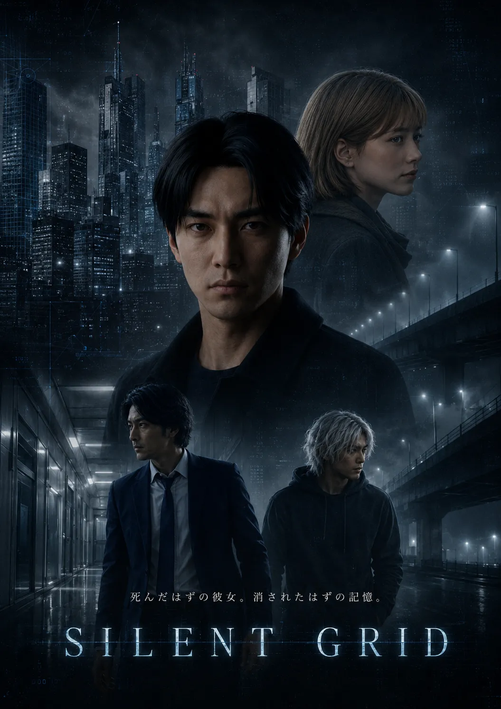

02.12
DATA NOT FOUND
IMGAUDGPS
MEMORY LOG / 02.12 – 02.14
20XX年、東京。記憶データ解析官ハルトは、自分の記憶ログに3日間の空白を見つける。
消えたのは、死んだはずの恋人ミサキとの最後の記憶。
02.11: LOCATION TRACKING [TOKYO.AREA.C] ACTIVE
02.11: BIOMETRIC DATA SYNCH COMPLETE
02.11: MEMORY BACKUP CONFIRMED — 847 ENTRIES
02.12
DATA NOT FOUND
02.13
DATA NOT FOUND
02.14
DATA NOT FOUND
02.12 – 02.14: DATA NOT FOUND — ERROR 404: MEMORY FRAGMENT CORRUPTION — SYSTEM FAILURE: CRITICAL DATA LOSS
STORY

20XX年、東京を中心とした巨大都市圏「メトロポリス・トーキョー」。すべての市民の記憶がクラウドに自動バックアップされ、政府が管理する時代。
記憶データ解析官のハルト・アイカワは、ある朝突然、自分の記憶ログに3日間の空白があることに気づく。削除されたのは、恋人のミサキ・サトウとの最後の記憶。彼女は交通事故で亡くなったと告げられていた。
しかし違和感を覚えたハルトが調査を始めると、ミサキの死には不可解な点が多く、事故そのものが捏造された可能性が浮かび上がる。さらに、彼女が生前、政府の極秘プロジェクト「グリッドシステム」の存在を突き止めていたことが判明する。
彼女は何を知ったのか？
失った記憶ログの真実とはー。
CHARACTER
二人の記録が、失われた3日間の真実へとつながる。
記憶データ解析官
記憶を管理する男が、自分の記憶を奪われた。
システムの正しさを信じてきた彼は、恋人の死を境に、自分が守ってきた秩序を疑い始める。
死んだはずの恋人
交通事故で死んだ——そう告げられただけだった。
死んだと告げられた彼女は、記憶の中に手掛かりを残した。彼女が最後に見つけたものは、事故よりも危険な真実だった。
GRID SYSTEM
あなたの記憶は、本当にあなたのものか。
愛した事実さえ、消せる世界で。
GRID SYSTEMは、市民の思考と記憶をリアルタイムで解析し、危険因子を事前に排除する。すべては、都市の安全のために。
GRID SYSTEM : 政府の極秘プロジェクト
全市民の記憶が毎秒クラウドに自動同期される。
アルゴリズムが思考パターンを解析し脅威度を算出する。
スコアが閾値を超えた市民は「要処理」としてフラグが立つ。
司法手続きを経ることなく、静かに、消える。
政府が推進する「安全都市計画」の核心を担う極秘プロジェクト。記憶の監視は法律上「公共安全保護法」に基づくとされているが、その運用実態は市民に開示されていない。詳細な設定は作品内で段階的に明かされます。
システムが「危険因子」と判定した市民は、裁判なしに記憶の消去処分を受ける場合がある。この処分が正当なものなのか、それとも権力による恣意的な排除なのか——ハルトの調査が核心に迫ります。
ハルトはGRID SYSTEMの内部で働く記憶データ解析官です。システムの「正しさ」を信じて職務を全うしてきた彼が、自分自身の記憶を消された瞬間、物語は始まります。
TRAILER
近未来東京の静けさ、途切れる声、追跡の速度。『SILENT GRID』の世界を予告で体験してください。
現在地または地域から検索できます。
PRODUCTION
［監督コメント］
テクノロジーが安全を守るほど、私たちは何を自分のものとして残せるのか。本作は、その問いを一人の喪失から描きます。
CREDITS
THEATER EXPERIENCE
大きな画面、暗闇、途切れる音。ハルトが失った3日間を、情報ではなく体験として受け取るために。
IMAX®／Dolby Atmos／4DX で上映。本編は全編ドルビービジョン仕上げ、日本語字幕上映も一部劇場で実施します。
近未来東京のスケールと、記憶の断片を大画面で体験する。
静寂、途切れる声、追跡の速度を劇場空間で受け取る。
「記憶は誰のものか」という問いを鑑賞後まで持ち帰る。
THEATER
地域を選択すると、上映館と上映時間を確認できます。選択後、各劇場のチケットページを開きます。
地域を選択すると、上映館と本日の上映時間が表示されます。
本予告／2030年2月15日（金）全国公開